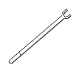
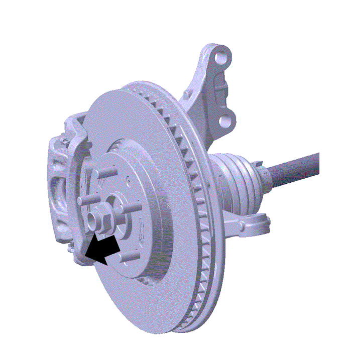
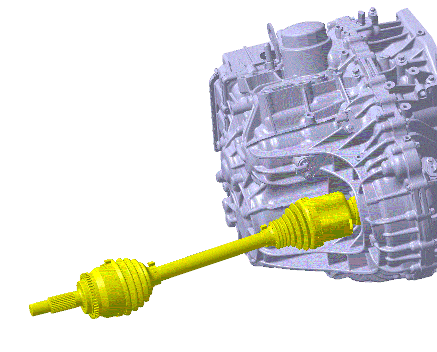
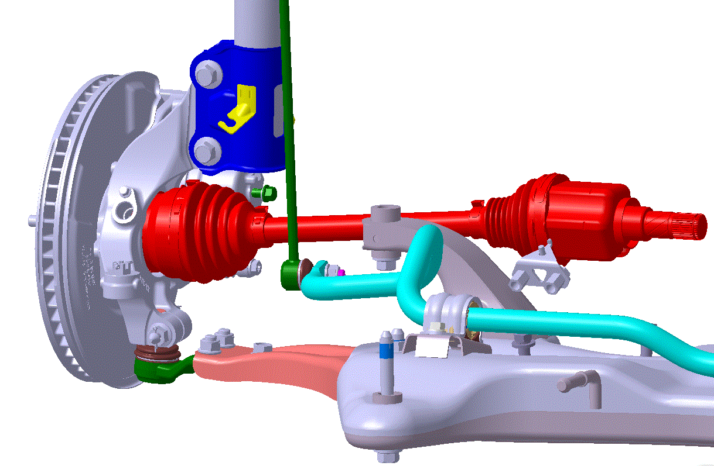
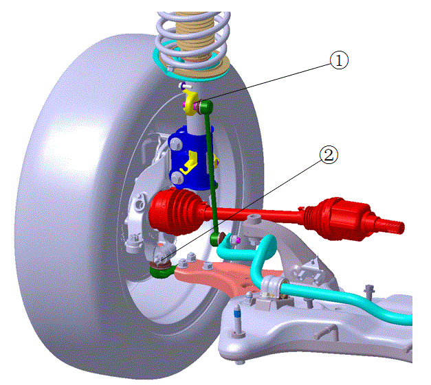

Снятие и Установка приводного вала в сборе
Левый приводной вал
Снятие
Специальный инструмент
|
 |
Инструмент для Снятие приводного вала |
-
Отсоединить жгут проводов отрицательной клеммы аккумуляторной батареи
-
Снятие колеса
-
Подъем автомобиля
Предупреждение
Использование правильных точек подъема имеет решающее значение для безопасности подъема. В противном случае это может привести к повреждению автомобиля или травмам.Внимание: при Подъем автомобиля с помощью двухстоечного подъемника необходимо использовать горизонтальные прокладки под точками Подъем
-
Снятие стопорной гайки
Снятие стопорной гайки (не подлежит повторному использованию)

-
Извлечь фиксированный конец приводного вала со стороны тормозного механизма
Снятие шплинта шаровой опоры переднего рычага подвески, корончатой гайки и болта; выпрямить и выполнить Снятие стопорного штифта ②
Снятие гайки Установка соединительной тяги ①

-
Использовать подходящий Инструмент для извлечения приводного вала из коробки передач

Установка
-
Вставить приводной вал в коробку передач
Защитить приводной вал во избежание повреждения шарнира равных угловых скоростей. Рабочий угол внутреннего шарнира равных угловых скоростей не должен превышать 23 градуса. Рабочий угол наружного шарнира равных угловых скоростей не должен превышать 45 градусов
При вставке приводного вала использовать защитную втулку сальника (поставляется вместе с сальником) для защиты сальника коробки передач
При Установка приводного вала убедиться, что пружинное стопорное кольцо установлено в паз дифференциала

-
Установка фиксированного конца приводного вала на ступичный подшипник тормозного механизма

-
Установка гайки Установка соединительной тяги ①
Крутящий момент: 120±10 N.m
Установка шплинта шаровой опоры переднего рычага подвески, корончатой гайки и болта; выпрямить и выполнить Установка стопорного штифта ②
Крутящий момент: 90±5 N.m

-
Установка стопорной гайки приводного вала
-
Установка колеса
-
Подсоединить жгут проводов отрицательной клеммы аккумуляторной батареи
Правый приводной вал
Аналогично Снятие и установка левого приводного вала